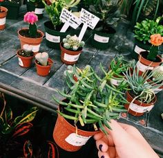
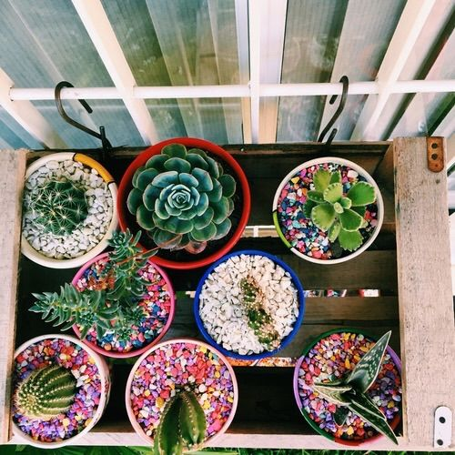
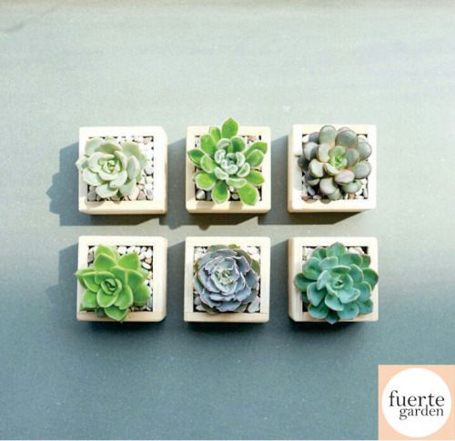
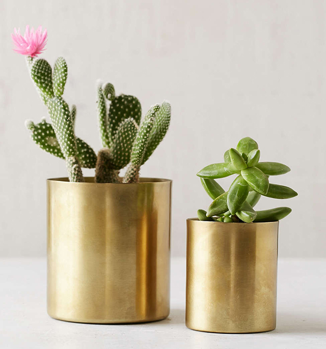
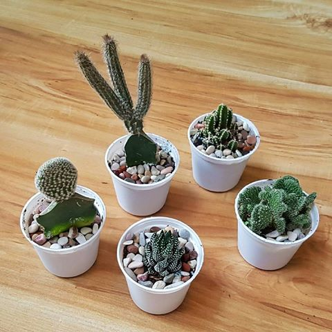

5 Tips for Beginners: How To Take Care Of Cacti and Succulents
In an effort to learn how to properly take care of my plants, I visited Amy Lastimosa, a cacti enthusiast and a member of the Cactus and Succulent Society of the Philippines (she also happens to be my tita so yay!). She gave me tour of her beautiful garden (the following photos were all taken from her garden) and taught me the basics of caring for your cacti. Here are ten tips for beginners:
1. Start with cheap cacti, get used to caring for them.
You can get common plants at 3 for PHP 100 at Farmers, QC Memorial Circle, or at any other plant store. Get used to caring for these plants. This way, when you move on to those more expensive plants, you already know how to care for them. Plants don’t like being moved around so much. You may repot a plant when it gets too big for its pot. Succulents are handled like any other plant. For cacti, however, it is best to use a towel when handling the plant so that you won’t hurt yourself with the spines in the process.
 
2. Give them as much sunlight as they need
Cacti are desert plants so they definitely need sun! However, depending on where you place them, the topical sun can sometimes be too much. Make sure your plants aren’t burning.
3. The medium is important!
The medium is the soil mix used for your plants. The basic mix is 50 % pumice, 50% soil. This is tweaked depending on other factors like the type of plant (example: for succulents, there should be more soil than pumice; cacti, on the other hand, need more pumice than soil). For cacti, specifically, you have good medium if water it today and the next day the soil is almost dry.
4. Water cacti!
The general rule is: water when dry. For plants that have already grown a stable root system in their pots, it is best to water until the water runs through the pot hole. It takes cacti 4-6 months until they are stable. Succulents, on the other hand, are easier to establish. You can water them like normal plant as long as the root system is already stable. Usually, you can water your cactus once a week duirng summers, and succulents 3x a week. When in doubt, conduct the stick test! Similar to the stick test in baking, you can poke a stick through your medium to check if there is still moisture. If dirt sticks to the stick, it’s still wet at the bottom, even if the top seems dry.
  5. Be observant!
Observe how your plants are. How they grow will generally tell you what they need! If the plant is growing out longer as if trying to reach more sunlight, it is probably etiolation (naks, legit plant term!) and that means it needs more sun. If your plant softens up or you may be watering too much or there may be fungal rot.